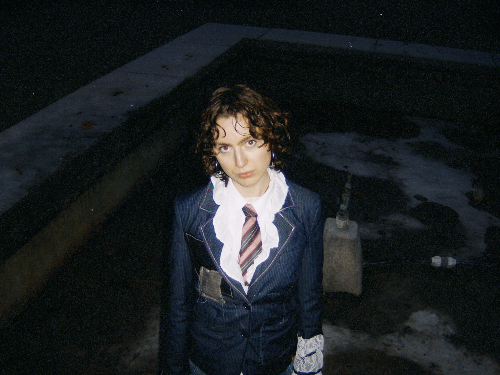
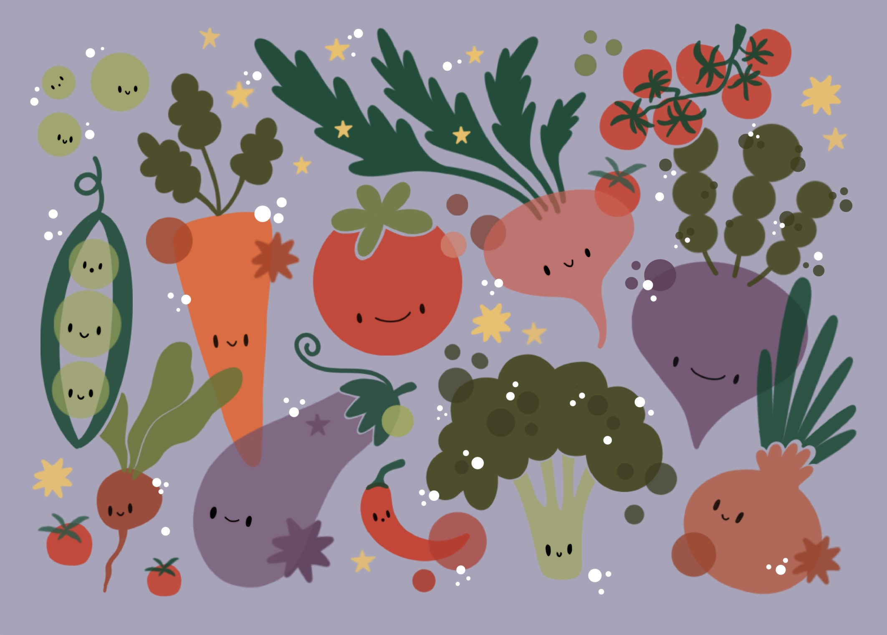
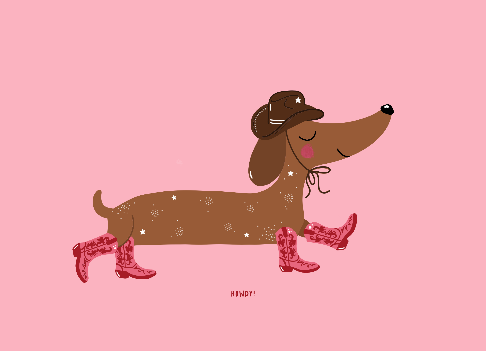
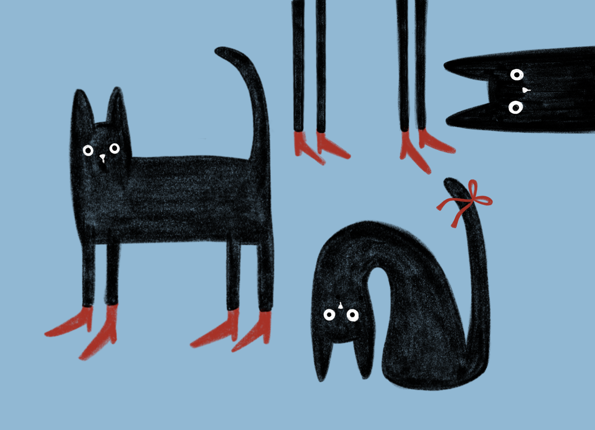
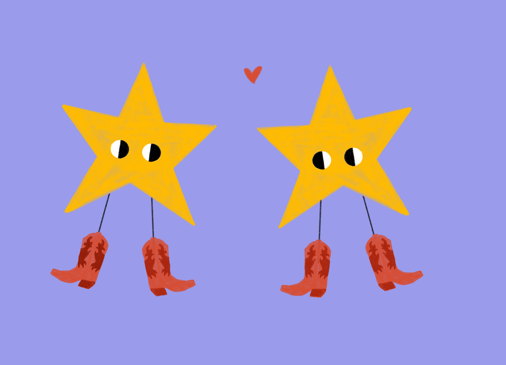
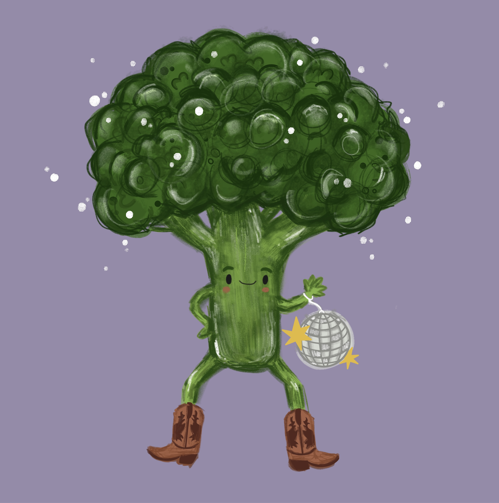

Computer scientist passionate about advancing gender equality in STEM and interested in how we can build safe, trustworthy and reliable AI systems.

Hello! I'm Anietta, a computer scientist based in Munich. I'm studying AI in Society (M.Sc.) at TUM as a scholar of the Konrad Zuse School of Excellence in Reliable AI (relAI), after finishing my B.Sc. in Computer Science at the University of Stuttgart.
I'm interested in AI safety and alignment: I've worked on this at IRIS3D in Stuttgart and in the AI Safety & Alignment group at the ELLIS Institute and Max Planck Institute for Intelligent Systems in Tübingen.
I think we need more women in STEM & tech, so I co-founded #WomenInSTEM and mentor girls in STEM. Away from the screen I'm painting, crafting, writing, taking photos, reading, bouldering, or out running, hiking or exploring new countries.
// EDUCATION
Oct 2026 — present
M.Sc. AI in Society
Technical University of Munich (TUM)
Scholar of the Konrad Zuse School of Excellence in Reliable AI (relAI, DAAD).
Oct 2021 — Dec 2025
B.Sc. Computer Science
University of Stuttgart
Final grade 1.1, with distinction.
Thesis: “Investigating the Emergence of Toxicity and Misalignment in Large Language Models Through Fine-Tuning” (IRIS3D).
Seminar on gender bias in image captioning models; research project on real-time physics in a 2D game (C++); Design Thinking and Leadership & Team Coaching in STEM at the Design Factory Stuttgart.
Sept 2023 — Dec 2023
Semester Abroad
University of Toronto
GPA A+. Courses in software design, interactive media design, data science and cognitive science.
2012 — 2020
Abitur (A-Levels)
Solitude-Gymnasium, Stuttgart
Grade 1.0. Awards: Ferry-Porsche-Preis, Scheffel-Preis, DMV-Mathematikpreis, DPG-Physikpreis, GDCh-Chemiepreis.
// EXPERIENCE
Feb 2026 — Apr 2026
Research Intern
ELLIS Institute & Max Planck Institute for Intelligent Systems, Tübingen
AI Safety & Alignment group, supervised by Maksym Andriushchenko. Research on emergent misalignment and generalization in LLMs.
Apr 2025 — Jan 2026
Student Research Assistant
IRIS3D, University of Stuttgart
AI Safety group led by Dr. Thilo Hagendorff. Literature research and scientific writing, empirical analysis of machine behaviour and emergent abilities in LLMs, Python tooling for data analysis and LLM APIs.
Mar 2024 — Sept 2025
Software Engineering Intern & Working Student
GEBIT Solutions GmbH, Stuttgart
UI design and frontend development with Angular and Flutter, web communication (REST, HTTP, gRPC), backend development in Java, testing with JUnit, Git workflows.
Oct 2022 — Mar 2023
Tutor, Theoretical Computer Science
Institute for Formal Methods in CS, University of Stuttgart
Tutorials accompanying the lecture “Theoretical Computer Science 1”.
Sept 2021 — Aug 2023
Private Tutor
Lernbox at Stöckach, Stuttgart
Maths lessons, homework help and exam preparation for grades 5–12.
When language models become misaligned through fine-tuning, do they notice? This paper shows that emergently misaligned models display behavioural self-awareness of their changed behaviour, and that this self-assessment shifts again once the models are realigned.
Accepted at TAIS 2026 for presentation and at the Machine+Behavior Conference 2026.
How stable is the “persona” that emerges in misaligned models? Accepted to the ICML 2026 Workshop on Epistemic Intelligence in Machine Learning.
Read on arXiv →Bachelor's research project at the Institute for Distributed and Parallel Systems, working towards real-time physics in a 2D survival-based game.
See GitHub repository →Blog post on the importance of supporting women and girls in science, technology, engineering, and mathematics.
See blog post →Participated as a speaker at the webinar discussing how we can support women in STEM in higher education and research.
See video →Participated in the annual program of the School for Talents "Expanding Realities – New Visions".
See website →Organisation of the Qiskit Fall Fest 2025.
See video → See article →Development of app prototype for facilitating human-robot interaction in the Design Factory.
// SCHOLARSHIPS
Oct 2026 — present
Konrad Zuse School of Excellence in Reliable AI
DAAD · relAI M.Sc. programme
Oct 2026 — present
Female Talent Pitch Scholarship
EnBW
Dec 2025 — present
Female Upgreat Scholarship
Bechtle Foundation
Sept 2023 — Dec 2023
Baden-Württemberg-Stipendium
Baden-Württemberg-Stiftung · University of Toronto
Apr 2022 — Mar 2025
Deutschlandstipendium (3×)
Funded by Vector Informatik, GEBIT Solutions, Novatec Consulting
// PROGRAMS
Sept 2026 — Oct 2026
Ferienakademie 2026
Sarntal · “Secure and Explainable Machine Learning”
Mar 2026 — present
EXIST Women
University of Stuttgart · women in entrepreneurship
Oct 2025 — Mar 2026
TechXXellence
KPMG · mentoring for female STEM students
Sept 2025 — Oct 2025
Ferienakademie 2025
Sarntal · “Achieving a Climate Neutral and Circular Economy in a Polarized World”
Sept 2024 — Dec 2024
YouGrow Women Mentorship
McKinsey · coaching, workshops, sustainability strategy case
Apr 2024 — present
School for Talents
University of Stuttgart · “Human Agency in the Age of AI”
Apr 2023 — Apr 2024
Female Talents Mentoring
IBM
// skills & tools
Software Development
Python · Java · Git · JUnit
HTML · CSS · TypeScript
REST · HTTP · gRPC
AI Safety & LLMs
Emergent misalignment · Fine-tuning
Behavioural evaluation of LLMs
Design & Creative
Figma · Lightroom
UI/UX design · User-centred design
Processing · Design Thinking
Organization
Scrum · Project management
Event planning & hosting
Research & Writing
Literature research · Scientific writing
Blog writing · Science communication
Languages
German · native
English · C2 (TOEFL iBT 6/6)
French · B1 · Spanish · A1
Since my school days I've been tutoring, mentoring and organising, today mostly to help women and girls find their place in STEM and to bring people together around technology.
Oct 2024 — present
University of Stuttgart
Co-founded a network for female STEM students. We organise and host networking, skill-building and career events.
women-in-stem.de →Oct 2025 — present
Germany's largest online mentoring programme for girls in STEM
Weekly sessions with a schoolgirl, exploring STEM topics together.
cybermentor.de →Oct 2026 — present
Initiative of the Gesellschaft für Informatik
Supporting the social media team of the IT-Heldinnen initiative.
it-heldinnen.gi.de →Oct 2021 — Apr 2026
USUS — student blog of the University of Stuttgart
Researching and writing articles on university-related topics.
usus.uni-stuttgart.de →// earlier engagement
I love trying creative things: drawing, painting, writing, collage making, printing techniques and photography. These are some examples.





Whether you want to talk about research and projects, team up for a women in STEM event, or just say hello — my inbox is open!